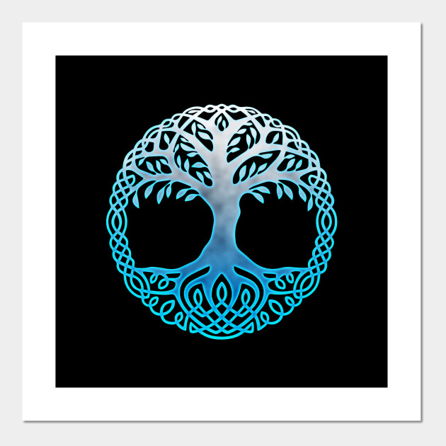

IGGDRASSIL
separador1
Esta es la biblioteca del conocimiento, en donde encontraras todo lo necesario para aprender de aquello
que es dificil de encotrar.
separador2


separador3
¿Que son las mitologias? Las mitologias son las antiguas religiones y creencias de las antiguas civilizaciones,
estas mismas ya fueron desmentidas y por ello ya no son consideradas religiones. Hay miles de religiones distintas
algunas de las mas famosas son las nordicas y la griega, que a su vez son de las que mas informacion poseen.
separador4